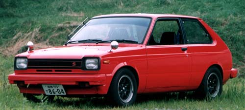
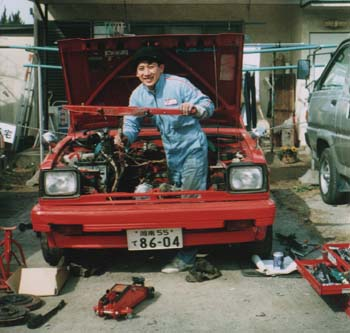
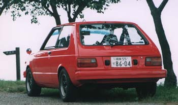
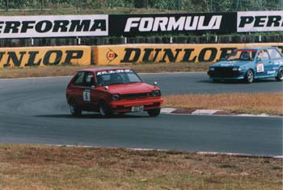
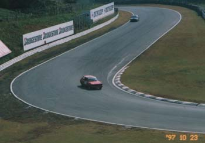

ＴＡＫＥ
|
プロフィール
製造：Ｓ４５年
車歴：ＫＰ１台目（他含み４台）
特徴：ＡｕｔｏＷｏｒｋｓの記事を見て入信（！？）
能天気な他のメンバーとは異なり（？）几帳面な性格。 |
|
| マシ～ン （過去のＫＰ） |
 |
|
スペック
| コンセプト |
しっかり作る！ |
| エンジン |
５Ｋ改，機械式バルブリフター，レーザー１ｍｍ面研，０．５メタルガスケット，７０度加工カム，クロモリ（３．７ｋｇ）フライホイール，トラスト４－１タコ足，ソレックス４４＋カールファンネル５０ｍｍ，アールズ１６段オイルクーラー，ＴＲＤプラグコード，ＴＲＤオイルパンバッフルプレート，ＴＲＤクラッチカバー＆メタルディスク，ガレージモリムラリダクションセル，強化Ｅ／Ｇ＆Ｍ／Ｔマウント，自作キャッチタンク，フジツボマフラー，コア増しラジエター，他 |
| 足廻り |
フロント：ＴＲＤ ＥＰ７１ラリーダートラガス＋ＫＧＭ４．８kg/mm，クスコピロアッパーマウント，クスコピロアーム，ＴＢＳロールセンターアダプター２７ｍｍ，ＴＲＤ強化スタビブッシュ，ウインマックス１０番
リア：ポテンザラリーガス＋５kg/mm，プロジェクトμ１０００番
アールズブレーキホース |
| 他 |
アルミ４点ロールバー，スパッツフルバケット×２， |
| 自慢 |
ベレＧミラーと２型のバンパーレスは最高です！
でもやっぱりフロントガラスのＫＰファクトリーが一番カッコイイ！！ |
|
|
  |
  |
|